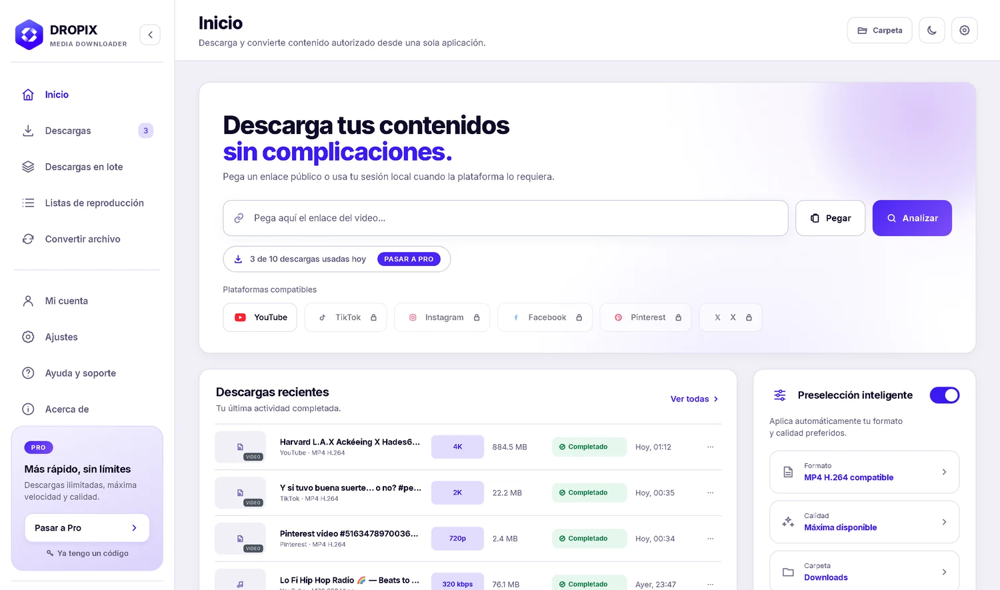
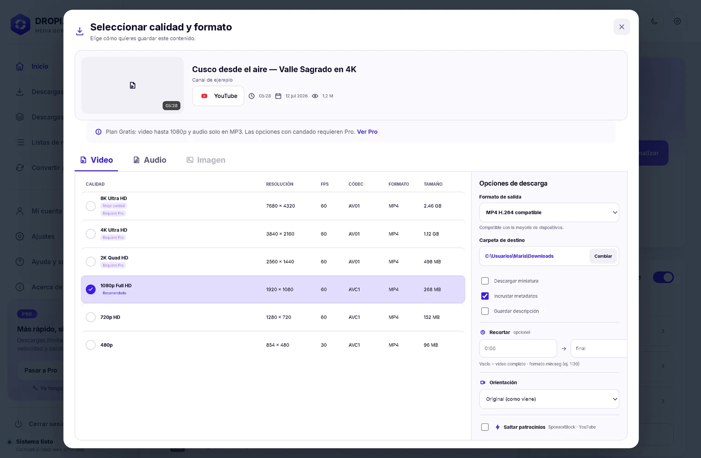
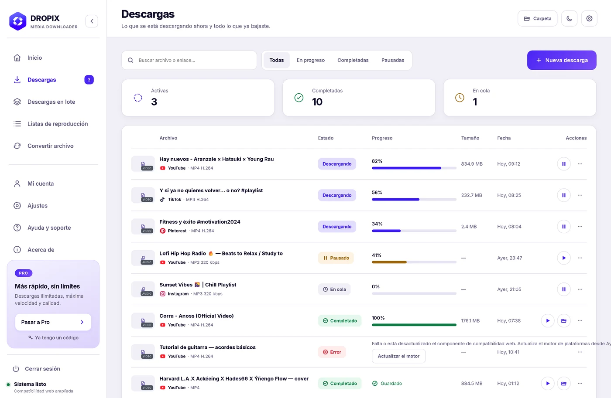

El escritorio que baja y convierte video, audio e imagen desde las seis plataformas que de verdad usas — hasta 8K, con perfiles listos para editar, procesado en tu propia máquina.

Cada barra es la resolución real, a escala. Un 8K no es «un poco más» que un 1080p: es dieciséis veces su superficie.
Gratis bajas hasta 1080p. Pro te abre la escalera entera, 4K y 8K incluidos — y cuando el video no llega tan arriba, se queda con la mejor calidad que exista. Sin preguntarte dos veces.
Sin cuentas que crear, sin páginas que te reboten. Todo ocurre en tu máquina.
DROPIX detecta la plataforma sola. Si ya lo copiaste, lo analiza al volver.
La escalera completa hasta 8K, o un acceso rápido de un clic.
Listo para tu línea de tiempo. En Pro bajas hasta cinco a la vez.
Lo que ves aquí es lo que verás instalado.

Accesos rápidos, no adivinanzas. En vez de pelearte con contenedores y códecs, eliges «Video para editar» y sale un H.264 que tu línea de tiempo acepta sin transcodificar.

Cola en paralelo. Pegas cinco enlaces y sigues con lo tuyo: cada uno avanza por su lado y ves el estado de todos de un vistazo.
Las plataformas cambian cada mes. El motor se actualiza solo, sin que reinstales nada.
También funciona con otros sitios públicos que el motor reconoce —Reddit, Dailymotion, Loom, Wistia, SoundCloud— aunque ahí la disponibilidad puede variar. No admite contenido con DRM, privado sin autorización ni bloqueado por la plataforma.
Ninguna te va a impresionar en una demo. Juntas te devuelven la tarde.
«Video para editar» te da un MP4 con H.264 que tu editor abre directo, sin transcodificar.
Eliges un tramo —«de 2:30 a 4:10»— y te llevas solo eso.
Vertical para Reels y TikTok, 16:9 para YouTube, 1:1 para el feed.
Fijas una vez tu formato y tu calidad, y deja de preguntarte en cada enlace.
Pega una playlist o un canal y marca solo los videos que quieres.
Un interruptor quita los tramos de patrocinio en YouTube.
Cierras DROPIX y lo que quedó a medias reaparece al reabrir.
Arrastra lo que ya tienes y conviértelo sin gastar cupo.
Cuando no necesitas la imagen, te llevas la pista y ya.
Tres botones y dos son falsos. El dominio cambia cada mes. Y el archivo, cuando sale, viene en 720p.
DROPIX es de pago y esas páginas no. Pagas que no haya anuncios, que tus archivos no salgan de tu computadora, y que alguien mantenga el motor al día.
Todo Pro durante una semana. Sin datos de pago y sin renovación automática: al terminar vuelves a Gratis, sin cancelar nada.
Los precios se ajustan a tu moneda al comprar. Ni el mensual ni el anual generan cobros automáticos.
Lo que ya tienes en cuanto instalas
30 días, sin cobros automáticos
Equivale a S/ 10 al mes
Ahorras 33%. Un pago cubre los 12 meses.
Un solo pago. No vuelve a vencer nunca.
Si DROPIX no funciona en tu equipo, te devolvemos el pago. Tienes 7 días desde la compra para probarlo y escribirnos. Y antes de pagar puedes usar la prueba gratuita, que no pide tarjeta.
Pagas como pagas todo lo demás en Perú. Nunca te pedimos datos de tarjeta.
Por WhatsApp, desde la app. El mensaje ya va listo: no explicas nada.
Yape, Plin o transferencia. Lo que ya tienes en el teléfono.
Escribes el código en «Mi cuenta» y Pro queda activo al instante.
Tu licencia funciona en un equipo a la vez y puedes cambiar de computadora cuando quieras, sin trámites. Si renuevas antes de que venza, los días que te quedaban se suman al periodo nuevo.
Cada actualización viaja firmada y la app verifica sus archivos en cada arranque. Un byte cambiado y vuelve sola a fábrica.
El motor corre en tu máquina. Tus archivos no pasan por ningún servidor.
Ni banners, ni ventanas emergentes, ni anunciantes. Nunca.
Las mejoras se aplican solas, sin permisos de administrador ni reinstalar 200 MB.
Es para contenido autorizado: lo tuyo, de dominio público, o aquel para el que tengas permiso. Para lo privado, usa la sesión de tu propio navegador. DROPIX no evita DRM ni baja contenido protegido.
No. Nunca hay cobro automático: cuando vence, tú decides. Si renuevas antes, los días que te quedaban se suman. El plan Para Siempre es pago único.
Tu plan va con tu cuenta, no con el equipo. Desde «Mi cuenta» liberas el anterior y activas el nuevo sin costo. Una vez cada 30 días.
Video en MP4 o MKV, audio suelto en MP3, e imágenes cuando la publicación lo permite. Con accesos de un clic: «Video para editar» saca un H.264 que entra en After Effects, y «Máxima calidad» deja el original sin recodificar.
No. Se instala en tu carpeta de usuario, así que funciona en equipos de oficina con permisos restringidos. Las actualizaciones tampoco los piden.
No es un fallo: es Gatekeeper, el filtro de macOS para lo que no pasa por la App Store. Se autoriza una vez y no vuelve a molestar:
1. Arrastra DROPIX a Aplicaciones y ábrela desde ahí. Saldrá el aviso: pulsa Listo.
2. Entra en Ajustes del Sistema → Privacidad y seguridad y baja hasta Seguridad.
3. Verás «Se ha bloqueado el uso de DROPIX» con el botón Abrir de todos modos. Púlsalo y confirma con tu contraseña o Touch ID.
Desde ahí abre con doble clic como cualquier app. En macOS 15 (Sequoia) el antiguo clic derecho → Abrir ya no funciona: Apple lo retiró y ahora hay que pasar por Ajustes.
¿Chip Apple o Intel? Hay una descarga distinta para cada uno. Míralo en → Acerca de este Mac: si pone «Chip Apple M1/M2/M3/M4» usa el botón normal; si pone «Procesador… Intel», que es el caso de los Mac de 2020 y anteriores, baja la versión para Intel. Una no funciona en la otra: macOS ni siquiera deja abrirla.